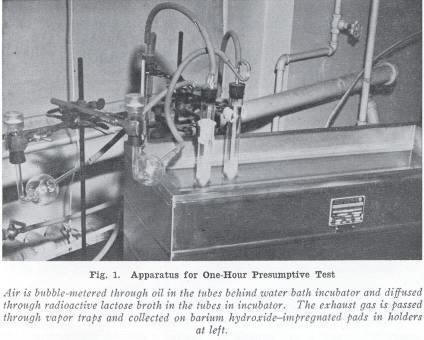
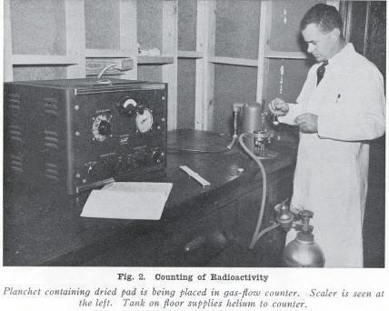
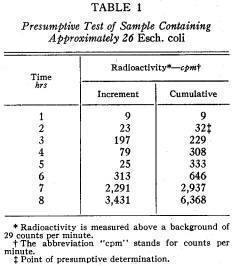
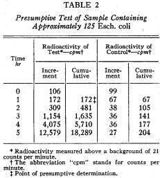
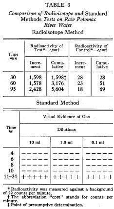

Reprinted from and
Copyrighted as a Part of Journal American Water Works Association
Vol. 48, No. 1,
January, 1956, Printed In U. S. A.
Preliminary Report
on a One-Hour Presumptive Test for Coliform Organisms
Gilbert V. Levin,
Venton R. Harrison, and Walter C. Hess
A contribution to
the Journal by Gilbert V. Levin, Civ. Defense Repr., formerly Public Health
Engr., Dept. of Public Health, Dist. of Columbia; Venton R. Harrison,
Bacteriologist, School of Medicine, Georgetown University, Washington, D.C.;
and Walter C. Hess, Prof. of Biochemistry, School of Medicine, Georgetown
University, Washington, D.C.
One of the paramount problems in the field of public health results from the long time lapse between inoculation and completion of bacteriological examinations. In controlling the quality of public water supplies, for instance, 48 to 72 hr must elapse before results of confirmed or completed bacteriological examinations can be obtained by standard methods (1). During that time, waterborne disease could be spread throughout a community. Although methods have been proposed to shorten the time interval, no methods have been devised to drastically reduce it, because all require either sufficient cell multiplication to yield direct visual evidence of colonies for identification or of production of gas.
If the disadvantages of current methods for the bacteriological examination of water are to be overcome, it is necessary to develop a tool capable of measuring such minute dimensions that a small number of cells present in a water sample can be detected and identified with little or no loss of time for incubation. Furthermore, the method must be simple enough to be used as a routine laboratory test.
Perhaps the most finely dimensioned investigative tools known at the present time consist of radioisotopes and the instruments for their detection. The senior author conceived the idea of applying these sensitive techniques to the problem of detection and identification of bacteria. This possibility was strengthened by the extensive fundamental research of Cowie, Bolton and Sands (2, 3), who used radioisotopes in metabolic studies of Esch. coli. The District of Columbia Department of Public Health and the Georgetown University School of Medicine decided to undertake a joint research project. The United States Atomic Energy Commission provided financial support. In June, 1955, work was begun at the university in Washington, D.C. This paper describes the progress and status of the investigation.
Experimental
The standard method for the identification of coliform organisms requires that there be production of gas from lactose (1). If the lactose is labeled with the radioactive isotope C14, then the carbon dioxide produced should include some of the labeled carbon that could be detected and measured. Lactose labeled with carbon-1, obtained from the National Bureau of Standards (4), was used to prepare standard lactose broth. Test organisms were inoculated into the broth and incubated with aeration. The carbon dioxide in the exhaust air was collected and examined for radioactivity after periods of time which were much less than the time required for the production of a visible bubble. The collection of the carbon dioxide was achieved by passing the. exhaust gas through a paper fiber pad moistened with a saturated solution of barium hydroxide.

The apparatus used for the aeration, culturing, and carbon dioxide collection forms a simple air train, which is shown in Fig. 1. At selected intervals, the pad was removed from its holder and dried under an infrared lamp. The radioactivity collected on the pad was then counted in a gas-flow Geiger counter attached to a scalar (see Fig. 2). In the first experiments, the exhaust gas from the culture was bubbled through a saturated solution of barium hydroxide and the precipitated barium carbonate was filtered, dried, and counted for radioactivity. It was found, however, that a significant amount of the radioactive barium carbonate remained in solution. The pad method was developed to reduce this loss and the sensitivity of the test was greatly increased.

In a typical early experiment, 10 ml of standard lactose broth containing 0.5 per cent 1‑C14 lactose (1.79 microcuries per milligram) were inoculated with approximately 26 Esch. coli cells, as determined by plate count of the inoculum suspension. The tube culture was incubated at 37°C with constant aeration. The exhaust gas was diffused through barium hydroxide solution by means of a tube with a fritted-glass tip. The tube containing the barium hydroxide was removed hourly and the contents filtered through a membrane filter that was then dried and measured for radioactivity. The activity was expressed in counts per minute as shown in Table 1. When the total activity exceeded twice the background count the level was considered significant for a positive determination. This occurred within 2 hr. The incremental decrease in the fourth and fifth hours probably represents a lag phase with resumption of multiplication occurring during the sixth hour.

Table 2 presents results obtained using the fiber paper pad to collect the radioactive carbon dioxide. The inoculum consisted of approximately 125 Esch. coli cells, as determined by plate count. The organisms were inoculated into only 5 ml of the 1-C14 lactose broth so that the remaining 5 ml could serve as a control. The presumptive presence of coliform organisms was detected in 1 hr even though some radioactive contamination was present at the start of the run, as indicated by the 0 hr counts. It was found that these counts were produced by the breakdown of trace impurities in the lactose. These spurious counts can be substantially reduced by aeration of the broth prior to inoculation.

After a number of confirmatory repetitions of this experiment, it was decided to try the method on raw Potomac River water as the first practical test. Water was taken from the river at a point in downtown Washington and was brought to the laboratory where five each of 10-ml, 1.0-ml, and 0.1-ml portions were inoculated into standard (nonradioactive) lactose broth. An equal volume (55.5 ml) of the same sample was filtered, and the filter membrane was removed and immersed in a test tube containing 5 ml of 1-C14 standard lactose broth. A sterile control was run with this tube. All tubes were incubated at 37°C. The two tubes containing the 1-C14 lactose broth were aerated and the carbon dioxide in the exhaust gas was collected by the pad method. At short intervals, the pads were replaced with fresh ones, and the exposed pads were dried and counted for radioactivity. The fifteen tubes run by the standard method were periodically examined for gas. The first pad was removed after 30 min and demonstrated a radioactivity far in excess of that needed for a positive determination. The results of the tests are shown in Table 3. After 10 hr of observation, no gas had yet appeared in the Standard Methods test tubes. The tubes were then incubated overnight, and, upon examination 24 hr after inoculation, gas was seen in all tubes.

Discussion
The ability of the method to reduce significantly the time required to determine the presumptive presence of coliform organisms has been demonstrated experimentally.
Theoretical calculations based on respiration rates of Esch. coli in standard lactose broth and the specific activity of C14 indicate that less than 20 cells can be detected in 1 hr with the present counting equipment. This assumes no bacterial multiplication during that period, and is not concerned with whether the organisms are in lag or growth phase.
The means of collecting the evolved C14O2 have been frequently changed in the course of the work as better methods were developed. There is believed to be much room for further refinement, which will correspondingly increase the sensitivity of the test. Pending selection of what seems to be the best collection method on which to standardize, the quantitative aspect of the test has not been stressed. Quantitative interpretation should not be difficult, however, once this standardization has been made. The slope of the cumulative radioactivity evolved as C14O2 shows whether the organisms are in lag or growth phase, and the number of organisms present in the test portion is then directly proportional to the counts evolved per minute. If semilog plots are made of the cumulative activity as a function of the time of experimental data cited herein these characteristics are evident. Instead of the multiple number of tubes required for a single quantitative presumptive coliform test, the 1-hr method will use only one test portion.
It seems likely that the method used in the rapid test can also be applied to develop a confirmatory test for coliform organisms, and this phase of the investigation will be pursued in the near future. Other work will include an attempt to use S35 in a variation of the method described to hasten the determination of the total number of bacteria in a water sample. Because S35 has a specific activity advantage over C14 of 10,000, it is likely that a single bacterium could be detected in a few minutes.
The rapid method should find use in other fields where bacteriological identification, culturing, or control is important, such as the milk and food industries, the sterilization industry, bacteriological warfare countermeasures, and medical diagnostic laboratories. The low order of radioactivity used does not require special safety equipment or more than elementary precaution by personnel.
Summary
A simple presumptive test for coliform organisms which employs radioisotope techniques to produce results within 1 hr has been described. Statistical comparisons of the new method to the standard method are not yet available. It is believed that the method might also be used to produce confirmatory results within an additional hour. Variations of the method promise to permit similarly rapid determinations of other types of bacteria. The method should find wide application in public health work, industry, bacteriological warfare countermeasures, clinical medicine, and other fields.
Acknowledgment
Particular acknowledgment and thanks are expressed to D. B. Cowie, Department of Terrestrial Magnetism, Carnegie Institution of Washington, for his early encouragement and continuing interest in this work.
References
1. Standard Methods for The Examination of Water, Sewage and Industrial Wastes. APHA, AWWA, & FSIWA, New York (10th ed., 1955).
2. Cowie, D. B.; Bolton, E. T.; & Sands, M. K. Sulfur Metabolism in Escherichia coil. J. Bac., 60:233 (1950), 62:63 (1951), 63:309 (1952).
3. Cowie, D. B.; Bolton, E. T.; & Sands, M. K. The Labeling of Bacterial Cells With S35 for the Production of High Specific Activity Compounds. Arch. Biochem. & Biophys., 35:140 (1952).
4. Frush, H. L. & Isbell, H. S. Synthesis of Lactose-1-C14 and Lactobionic-1-C14 δ-Lactose from 3-β-D-Galactopyranosyl-α-D-Arabinose. J. Research Nat. Bur. Standards, 50:133 (1953).